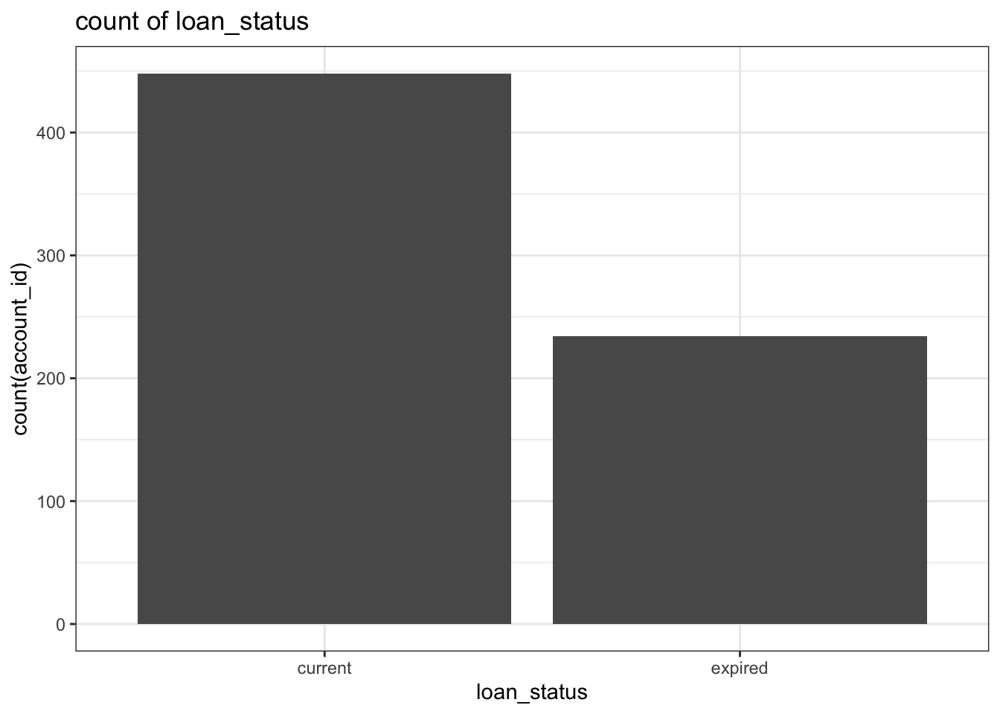
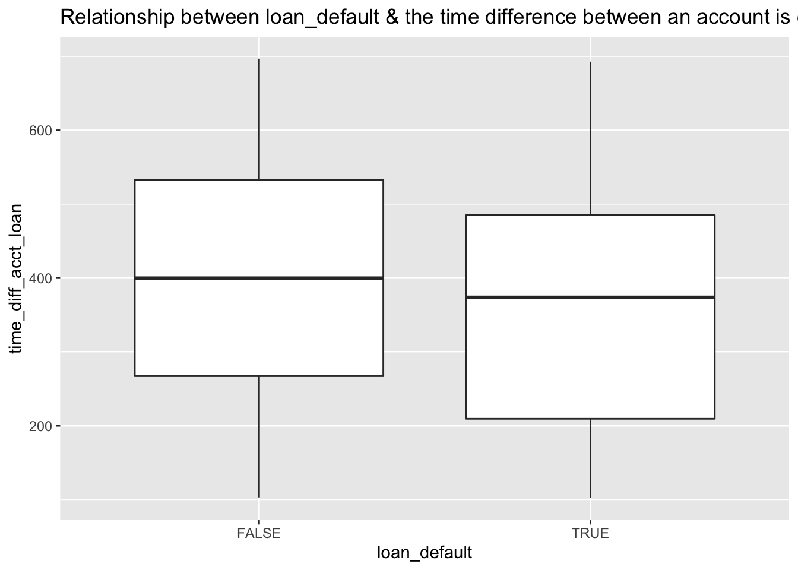

Create visualizations that combine all these account characteristics: * Whether an account has a credit card or not * Whether an account has a loan or not * The average balance for the account
Data preparation before visualizations, which includes 3 steps: create a column to indicate the loan & credit card status of an account, calculate the average balance per account, and create a sequential id
From the 1st graph, which shows the average balance per account per credit card & loan status, we can see credit cards were mainly issued to 2 groups of account id. It can be misunderstood as issuing many credit cards during a specific time period, which isn’t because in the second graph, I plotted everything on acct_creation_date (credit card issue date is NA) and found out the credit card issuance is very even throughout the time. Also from the 1st graph, we can see there is no significant difference in account balance whether an account has credit cards, loans or not, although most accounts have neither credit cards nor or loans.
There are 6 columns related to loans, loan_date, loan_amount, loan_payment, loan_term, loan_status and loan_default. I will look at each column individually and some columns collectively and create graphs shown below to illustrate my findings.
2.1 First I look at if the general situation with loans, such as how many loans in total, if all accounts have loans or only a few accounts have loans. We can tell from the graph below that the majority of accounts (0.85) don’t have loans, represented by the missing value percentage of column loan_date.
2.2 Next I look at loan_date and see if there is any general trend, like loans are increasing over the years, and if there is any seasonality, such as there is more loans applied/approved in April each year etc.
We can see from the graph below that the total loan_amount increases from 1993 to 1998, but there is no obvious seasonal trend identified. Total loan amounts can vary significantly from month to month in some year (y.1997), and sometimes they are pretty steady throughout the year (y.1995)
2.3 Thirdly I look at loan_payment, its overall distributions and percentage of loans paid. From the first graph, which shows the loan_payment of each account with a scatter plot, the distribution of loan_payment is scattered around without any discernible patterns. The range of loan_payment is between 0-10,000.
From the second graph, which shows the percentage of loan paid by account, we can see there are only 5 percentages, well below 10%, meaning all accounts only paid less than 10% of their total loan, which is a bit weird.
2.4 Next I look at loan_term and its distributions. Per graph 1, which shows count of loan_term, we can see each loan_term is very balanced, there are about the same number of accounts in each category of loan_terms. Per graph 2, which shows sum of loan_amount per loan_term, illustrates that the longer the loan term, the bigger the loan amount. It makes sense because longer terms usually means customers are getting a bigger loan so they can even out the payment each month.
2.5 Onto loan_status, from the graph below we can see most loans are current, almost double the size of expired loans.

2.6 Finally onto loan_default. It’s a good sign that the majority of loans are not default and only a small proportionf of loans are dafault.
To find out if there is a relationship between a good or bad loan and the time between an account is opened and the loan is created, I need to perform a bivariate relations, which is looking at the relationship between 2 numeric variables through scatter plots.
From the scatter plot we can see there isn’t a very obvious relationship between the 3 variables, because the dots of good and bad loans are almost even distributed on both sides of the line. It’s not like the default loans are more concentrated on loans that were opened early which would then yield a steeper line than the line now.
Then I look at the relationship between variable loan_default and time_diff_acct_loan, which is the time difference between loan created date and account open date. Although loan default may not be related to neither acct_creation_date nor loan_date, it may be related to the difference of the 2. From the boxplot below, we can see that the default loans tend to have a shorter time difference than the loans that are not in default. But the difference is very subtle and I don’t think it’s significant.

Since there is no significant relationship between loan default, acct_creation_date, loan_date or time_diff_acct_loan, I move on to other finding relationships between loan default and other loan related variables that can be used to determine what accounts that seem to be at higher or lower risk of defaulting.
I plotted all of the rest of loan related variables against loan default with both scatterplots and boxplots, and finally found 2 variables that seem to have a strong relationship with laon default, and that are loan_amount and loan_payment. Let me explain with loan_amount. From the graph below, we can see default loans have a higher amount than non-default loans, so the accounts with a higher amount tend to have a high risk of default.
## Rows: 4,500
## Columns: 6
## $ account_id <dbl> 1, 2, 3, 4, 5, 6, 7, 8, 9, 10, 11, 12…
## $ credit_cards <chr> "1", "1", "1", "0", "1", "1", "1", "1…
## $ debit_credit_card_other_txn_ct <dbl> 0, 0, 0, 0, 0, 0, 1, 0, 0, 0, 0, 0, 0…
## $ debit_credit_card_other_txn_tot <dbl> 0, 0, 0, 0, 0, 0, 5900, 0, 0, 0, 0, 0…
## $ debit_credit_card_other_avg_txn <dbl> 0.000, 0.000, 0.000, 0.000, 0.000, 0.…
## $ id <int> 1, 2, 3, 4, 5, 6, 7, 8, 9, 10, 11, 12…One things that’s worth noting from all three graphs below is that many accounts that don’t have associated credit cards have debit transactions from credit cards. Some of those transactions have a very high dollar amount and are very frequent.
In order to find our why, I join the transactions and accounts together because transactions have details on the method. I want to make sure these transactions are indeed credit card transactions and are not mistakes coming from transactions into accounts. So I extracted all the accounts that don’t have a credit card but have credit transactions, and find those account_id in transactions to see if there are transactions with method=‘credit card’. And there are quite a few transactions.
From the graph below, we can see there are quite a few cases when an account don’t have any credit cards yet have many credit card related transactions. Why this is happening is beyond my understanding. I can’t think of any reason other than there is a mistake categorizing the credit card transactions. Maybe some transactions are not credit card associated transactions but in the system somehow are categorized as credit card transactions. Or those accounts actually have credit cards with other banks but the system in this bank does not know that so it still thinks these accounts have no credit cards. Otherwise it wouldn’t be so many cases.